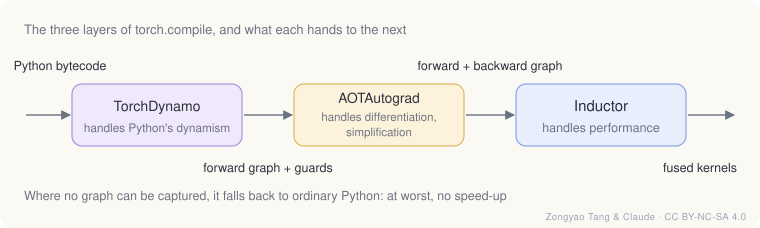

The thread: first the basic limitation of executing one operator at a time → the two steps of torch.compile: capture a graph, generate kernels → under what conditions a captured graph can be reused, decided by guards → training also needs the backward graph, which is the middle layer's job → where the compiler cannot understand the code, the graph breaks → finally, what it can and cannot solve. Why fusion makes things faster is left to 4.2; this unit covers the whole flow.
Part 2 · The PyTorch execution stack2.5 The three-layer stack of torch.compile
Translated by AI (Anthropic's Claude) from the Chinese edition. The Chinese original is the reference.
This unit answersHow does torch.compile turn a piece of Python into a few fused kernels?
Follows 2.3: executing operators one by one has a fixed overhead and cannot see the whole picture. A compiler sees the whole graph at once and solves both problems together.
- Executing operators one by one cannot see the whole, so it cannot optimise across operators
- torch.compile in two steps: capture the graph, then generate kernels
- Guards: every compiled result carries a set of "conditions of use"
- AOTAutograd: getting the backward graph in advance too
- Graph breaks: where the compiler cannot understand, fusion stops
- Compilation fights overhead and bandwidth, not compute
Explanation
1Executing operators one by one cannot see the whole, so it cannot optimise across operators
PyTorch's default is "eager execution": each time Python calls an operator, it executes that one at once and hands control back to Python. The framework only ever sees the current operator, without knowing what came before or comes after. So every optimisation that needs several operators in view at once is out of reach.
What eager execution gives you. The model is ordinary Python: you can use
ifandfor, set a breakpoint or print an intermediate result on any line, and when something fails the stack trace points to the line you wrote. This is the main reason PyTorch is pleasant to use.What it cannot see. Consider
y = gelu(x + b). Eagerly:- First the addition runs: read x and b, write the result into a newly allocated temporary tensor.
- Then gelu runs: read the temporary tensor, write the result into y.
When the addition runs, the framework does not know its result is about to be used by gelu, and only once. So it has to write the result back to GPU memory, dutifully. If both steps were in view at once, one kernel could be generated: read x and b, add them in registers, compute gelu straight away, and write y once. The intermediate result never touches memory at all. This is called fusion, covered in 4.2.
Other things only possible with the whole in view:
- Removing the Python and dispatcher overhead: a whole stretch of computation enters C++ once, rather than once per operator.
- Planning memory in advance: knowing when each intermediate result is no longer needed, its space can be reused.
- Eliminating repeated computation, and computing in advance the constants that can be.
Why the earlier ways were not good enough. To see the whole, you first need "a graph of the whole computation". PyTorch used to have two ways, and the PyTorch 2 paper explains their problems clearly:
- Tracing: run once with a sample input and record the operators executed. The problem is that it records only the path taken this time; which branch of a Python
ifwas taken and how many times a loop ran are frozen, and a different input may quietly compute the wrong thing. - Scripting: compile the Python code as a restricted language. The problem is that much ordinary Python is not supported, and users have to rewrite their models.
What the two share: when they meet a case they cannot handle, they either fail or ask you to change your code.
The idea of torch.compile. It does not require the whole model to become a graph. Whatever can be captured as a graph is captured and compiled; where it cannot capture, it falls back to letting the ordinary Python interpreter run, and resumes capturing after that stretch. The worst case is simply no speed-up, never an error. The next card explains how it does this.
An analogyLike a simultaneous interpreter going sentence by sentence: fast and flexible, but unable to reorder or merge repeated phrases. A polished translation needs the whole passage in view first.
So eager execution buys flexibility and easy debugging, at the cost of two things: a fixed overhead paid by every operator (2.3), and unnecessary memory reads and writes between neighbouring operators. The aim of torch.compile is to win these two back without giving up writing in Python.
Builds on This path costs several microseconds every time; when the model is small and its operators fragmented, it becomes the bottleneck"Slow" on the pipeline comes in only four kinds: waiting for data, on compute, for orders, for the other GPUsSourcesPyTorch 2 paper, page 2, introduction: the limits of eager executionPyTorch 2 paper, page 3, §2: earlier approaches to graph captureAccelerate chapter 3: compiling models- How, then, do you get "a whole stretch of computation" without rewriting the model? torch.compile does it in two steps.
2torch.compile in two steps: capture the graph, then generate kernels
TorchDynamo intercepts the bytecode while Python runs and captures the model's computation as a graph; TorchInductor then fuses and schedules the whole graph and generates Triton kernels for the GPU.

Each of the three layers does one job, and what passes between them is a graph Step one: TorchDynamo captures the graph. It works in a very particular place: just before the Python interpreter executes bytecode.
Python source code is first compiled into bytecode, which the interpreter then executes instruction by instruction. CPython offers an interface that lets a function be "intercepted" just as it is about to run. TorchDynamo uses this interface to take over the functions being compiled:
- It simulates the function's bytecode itself, instruction by instruction.
- When it meets an operation on tensors, it does not execute it but records a node in a graph.
- When it meets ordinary Python (reading an attribute, arithmetic, calling another Python function), it simulates it faithfully, following into called functions.
- The facts the simulation relied on are recorded as guards (next card).
- When done, it generates new bytecode to replace the original function: it calls the compiled graph, then puts the results back into the original variables.
So TorchDynamo is a "bytecode to bytecode" translator: its input is the function you wrote, its output a function that does the same thing but with the tensor operations replaced by "a call to a piece of compiled code". Your
ifs,fors and Python data structures were all walked through during the simulation; what remains in the graph is only tensor operations.This solves the problems of the earlier ways: it sees the real control flow (so it does not quietly freeze branches as tracing does; the branch conditions go into guards); and it does not need to understand all of Python (where it cannot cope, it can fall back; see graph breaks below).
The middle step: AOTAutograd. Prepares the backward graph too, and simplifies the operators into basic ones. Covered separately below.
The last step: Inductor generates kernels. Given a graph of only basic operators:
- It decides which operators to fuse into one kernel. Element-wise operations and reductions are merged wherever the shapes line up.
- It generates code for each fused group. On the GPU it generates Triton programs (4.3), which Triton compiles into machine code for the GPU; on the CPU it generates C++.
- Matrix multiplications and convolutions are not generated; ready-made libraries are called.
- It plans the memory of intermediate results and generates a wrapper that calls these kernels in order.
The paper explains why Triton was chosen: they saw that many people writing high-performance kernels by hand were already using it; generating Triton code is simpler than generating CUDA directly, and performance is assured. 4.3 covers Triton itself; by then, the code Inductor generates will be a set of Triton functions you can read.
An analogyLike translating a book: read the whole book first (capture), then polish it as a whole (fuse, generate code), rather than interpreting live sentence by sentence.
So after compiling you can look at the generated Triton code directly (for example by setting TORCH_LOGS=output_code) and check which operators were fused together.
Builds on Executing operators one by one cannot see the whole, so it cannot optimise across operatorsUsed later in Guards: every compiled result carries a set of "conditions of use"Graph breaks: where the compiler cannot understand, fusion stopsOperator fusion: intermediate results never touch memorySourcesAccelerate chapter 3: Dynamo and backendsAccelerate chapter 3: TorchInductorPyTorch 2 paper, page 4, §3 TorchDynamo: bytecode to bytecodePyTorch 2 paper, page 6, §3.4: symbolically evaluating bytecodePyTorch 2 paper, page 8, §4: TorchInductor and Triton- A graph is captured for "this one call". When the same function is called again, can the graph still be used?
3Guards: every compiled result carries a set of "conditions of use"
While compiling, TorchDynamo makes many assumptions from the situation at the time: the shapes and types of the input tensors, the value of some Python variable, which branch of an if was taken. These assumptions are recorded as a set of checks called guards. Every later call runs the checks first: if all pass, the compiled result is used directly; if one fails, another version is compiled for the new situation.
Why they are needed. Python is dynamic. The same
forwardfunction may execute a different sequence of operators on one call than on the next:def forward(self, x): if self.training: # depends on an attribute x = self.dropout(x) if x.shape[0] > 16: # depends on the input's shape ...TorchDynamo captures the graph by following the actual situation at the time:
self.trainingis True, so dropout goes into the graph;x.shape[0]is 32, so it goes inside the secondif. The resulting graph is only correct when "all these conditions hold".Guards record these conditions. Some common kinds:
- Attributes of input tensors: data type, device, number of dimensions, the size of each dimension, whether it requires gradients.
- Values or types of Python objects used:
self.trainingis True; some configuration item equals 4; some list has length 3. - The modules and functions used have not been replaced.
Each call to a compiled function runs these checks first. They are light comparisons, but many of them add up.
When a check fails. The graph is captured and compiled again for the new situation, and kept alongside the earlier ones. On the next call, whichever version's guards pass is used. There is a limit on the number of versions a function can accumulate; beyond it the function is no longer compiled and falls back to ordinary execution.
The most common trigger: the shape changed. By default, compilation is for specific shapes. When the input's batch size or sequence length changes, the guards fail.
- The last, partial batch: triggers once per epoch. Avoid it with
drop_last=True. - A different sequence length in every batch: may trigger at every step. Pad lengths to a few fixed sizes.
- Or let the compiler treat a dimension as "variable": it generates code that works for any size of that dimension, and relaxes the guards accordingly. Once the compiler notices a dimension changing, it usually does this automatically; the paper has a section on how it handles dynamic shapes.
Other triggers. Switching between training and evaluation (
self.trainingchanged; one version each, which is normal); passing in a Python number as an argument that differs every time (one version per distinct value).How to notice. The typical sign of recompilation: training stalls every so often, or the first few hundred steps are very slow. Turn on the logs and you see the reason for each recompilation (see the "troubleshooting" at the end of this unit).
An analogyLike a permit issued for specific conditions: "only for this type of vehicle, on this route". Before each trip it is checked; if everything matches, off you go; with a different vehicle, you have to apply for a new one.
So a compiled function is not "compiled once, valid forever". A change in the input's shape or in a flag inside the model can trigger recompilation. Once in a while is fine; recompiling at every step is slower than not compiling at all.
Used later in AOTAutograd: getting the backward graph in advance tooSourcesPyTorch 2 paper, page 5, §3.1: guardsPyTorch 2 paper, page 11, §5: dynamic shapesPyTorch docs: torch.compile Troubleshooting- Capturing graphs and checking conditions only concern the forward pass. In training, half the computation is in the backward pass.
4AOTAutograd: getting the backward graph in advance too
What TorchDynamo captures is only the forward graph. Training also needs the backward. The middle layer, AOTAutograd, takes the forward graph, lets the autograd engine walk through it with fake inputs, and records the backward nodes it would execute, producing one graph containing both forward and backward, which it hands to the backend to compile.
The problem. As 2.2 explained, in eager execution the backward graph is recorded node by node during the forward pass and walked by the engine at
backward(). If only the forward pass were compiled and the backward still ran that way, half the computation would get no optimisation.How. AOT means "ahead of time". Given the forward graph from TorchDynamo:
- Use "fake tensors" as inputs. A fake tensor has only metadata such as shape and type, no real data, so this step takes no memory and does no real computation.
- Let PyTorch's existing autograd machinery work as usual: keep the ledger in the forward pass, then call backward.
- Record every operator executed in the process, including the operators called inside each node in the backward pass.
The result is a "joint graph": its inputs are the original inputs, its outputs the original outputs plus the gradients. It is then cut in two: the forward part and the backward part. The cut has to decide one thing: which intermediate results of the forward pass are handed to the backward. This is exactly "keeping intermediate results for the backward pass" from 2.2, only now arranged by the compiler as a whole. The paper notes that it prefers to save those that are expensive to recompute, and lets the backward recompute the cheap ones, saving memory.
The benefit of this approach is that no separate set of differentiation rules is needed for compilation: it reuses the derivative table and the engine of 2.2 directly, guaranteeing results consistent with eager execution.
Two more things this layer does on the way.
- Decomposition. PyTorch has over two thousand operators. Having every backend compiler know them all is not realistic. This layer breaks complex operators into combinations of a small set of basic operators (for instance a normalisation into subtracting the mean, dividing by the standard deviation and so on), so a backend only has to handle one or two hundred basic operators.
- Removing in-place operations and side effects. It turns the graph into "pure function" form: each operator produces outputs only from its inputs, modifying no existing tensor. Such graphs are much simpler to analyse and transform.
The division of labour among the three layers can now be stated in full:
Layer Input Output Concern TorchDynamo Python bytecode Forward operator graph + guards Python's dynamism AOTAutograd Forward graph Forward + backward graph, basic operators only Differentiation, simplification Inductor The graph above Fused kernels (Triton code on the GPU) Performance Each layer can be replaced on its own. For instance, swap the last layer for another backend compiler and keep using the first two.
An analogyLike a rehearsal: before the real performance, the actors walk through the stage without an audience or lights while the director notes everyone's moves, re-blocks the show from them, and the real performance follows the new blocking.
So after compilation, backpropagation is no longer the engine walking node by node on the spot, but a piece of code generated in advance. Operators in the backward pass can be fused too, and which intermediate results of the forward pass to keep can be decided at compile time.
Builds on Guards: every compiled result carries a set of "conditions of use"backward() is one traversal of this graph: whichever node has all its upstream gradients goes nextTo go backwards, the forward pass's intermediate results must be kept: the bulk of training memoryHow to "walk back" through each operator is written in one table, and the code is generated from itUsed later in Compilation fights overhead and bandwidth, not computeFusion in training: what about fused-away intermediate results the backward pass needsSourcesPyTorch 2 paper, page 7, §3.9: AOTAutogradPyTorch 2 paper, page 8: partitioning and decomposing the joint graph- When TorchDynamo simulates Python, it cannot handle everything.
5Graph breaks: where the compiler cannot understand, fusion stops
Data-dependent Python control flow, .item(), print, and unsupported operations make Dynamo "break the graph" there: it is split into two graphs before and after, with ordinary one-by-one execution in between.
What happens. TorchDynamo simulates the bytecode instruction by instruction; when it meets an operation it cannot handle, it does not fail but cuts the graph there:
- The part captured before the break becomes one graph and goes off to be compiled.
- The ordinary Python interpreter runs the operation it could not handle.
- Capturing starts again after the break, giving another graph.
So one function becomes "graph 1 → a bit of ordinary Python → graph 2". The program's result is still correct, which is the strength of this design.
The cost.
- Fusion cannot cross a break. The last operator before the break and the first after it, which might have become one kernel, can no longer be merged.
- Each graph has its own guards to check and its own entry into and exit from compiled code. When the graph is cut into many small pieces, these costs can eat up the gains of compiling.
- Any tensor operations in the ordinary Python at the break run eagerly, with no speed-up at all.
The most common cause: needing the actual values inside a tensor. When the compiler captures a graph, tensors have only shapes, no contents. Any operation that "must compute the result before it can go on" breaks the graph:
if x.sum() > 0: # the branch depends on the data ... print(loss.item()) # brings the value back into Python n = int(x.max()) # uses a tensor's value as a Python integerCompare:
if x.shape[0] > 16does not break the graph, because the shape is known at capture time (it becomes a guard). The difference is whether the condition depends on "metadata" or on "data".Other causes. Calling an outside library function the compiler does not know (passing a tensor to NumPy or another C extension, say); using some Python feature not yet supported.
What to do.
- Find them first (the "troubleshooting" at the end of this unit). Only those on the hot path matter.
- Move logging and printing out of the compiled function, or do them less often.
- For branches that depend on data, if both sides are just tensor operations, rewrite without the branch, for instance
torch.where(cond, a, b): compute both sides and choose element by element. - If it really cannot be avoided, let it break. One or two breaks in a model are nothing to fear; what hurts is a break in the innermost loop.
An analogyLike toll booths on a motorway: at each one the traffic has to stop and then speed up again.
So to get the benefit of torch.compile, find and remove the graph breaks on the hot path (TORCH_LOGS=graph_breaks shows them).
Used later in Compilation fights overhead and bandwidth, not computeSourcesAccelerate chapter 3: compilation logsPyTorch 2 paper, page 7, §3.8: graph breaks and continuation functions- Finally, its limits must be made clear. torch.compile is not a free lunch, nor does it work for every model.
6Compilation fights overhead and bandwidth, not compute
torch.compile saves two things: the fixed overhead of executing operators one by one, and unnecessary memory reads and writes between neighbouring operators (through fusion). It does not make one large matrix multiplication faster, because that already calls a highly optimised library. So it helps clearly for models with many small operators, and little for models whose time is already filled by a few large matrix multiplications.
What it can save.
- Framework overhead (waiting for orders). A whole stretch of computation becomes a few C++ calls, and most of the costs every operator pays, Python, the dispatcher, allocating each output, disappear. For the overhead-bound models of 2.3, this gains the most.
- Memory reads and writes (bandwidth). Element-wise operators are fused into one kernel, and intermediate results never touch memory (4.2). Bandwidth-bound parts such as normalisation, activation functions and residual additions get faster.
- Memory use. Without those temporary intermediate tensors, peak memory often falls somewhat too.
What it cannot save. Large matrix multiplications and convolutions. They already call libraries like cuBLAS and cuDNN, whose implementations are close to the hardware's limit (4.5), and the compiler does not rewrite them. If the profiler shows ninety percent of GPU time in matrix multiplications, the gain from compiling can only be found in the remaining ten percent.
The numbers in the paper. On one A100, across more than 180 real models, the default backend's geometric-mean speed-up over eager execution was 2.27× for inference and 1.41× for training. "Geometric mean" means the models differ a lot: some got several times faster, some barely changed. Training gains less than inference partly because matrix multiplications and the backward pass take a larger share in training.
The costs.
- Compile time. The first call waits from tens of seconds to minutes. For short experiments it may not pay off; for long training it is negligible.
- Recompilation. As above. Training with unstable shapes needs that dealt with first.
- Harder debugging. Compiled code no longer maps line by line onto your Python. For a numerical problem, first switch compilation off and confirm eager execution is right.
- Not every way of writing is supported. The graph breaks of the previous card.
Modes.
torch.compile(model, mode=...)offers:- Default: a balance between compile time and running speed.
reduce-overhead: additionally uses CUDA Graphs (3.6) to press down even the cost of "launching a kernel", suited to small models and small batches; it costs some extra memory and is more sensitive to shape changes.max-autotune: spends longer compiling to search for faster configurations.
How to judge whether it is worth it. As in 0.2: get a baseline first, then turn compilation on, skip the compile and warm-up steps, and measure steady-state throughput and peak memory. Glance at the logs for graph breaks and recompilations too.
Troubleshooting: seeing what the compiler captured, where it broke, and why it recompiled
torch.compile's behaviour can be seen through log switches. They are set with the environment variable
TORCH_LOGS, without changing code. The names below are from PyTorch 2.x; the full list is in the official troubleshooting documentation.Where the graph broke.
TORCH_LOGS=graph_breaks python train.py
Prints one line per graph break: which file and line it broke at, and why (called an unsupported function, tested a tensor's value…). Only those on the hot path matter: the code every step of the training loop passes through. A break in code run once at initialisation has no effect.
Why it compiled again.
TORCH_LOGS=recompiles python train.py
Prints one line per recompilation, saying which guard failed, for instance some dimension of some tensor changed from 32 to 17. From this, decide whether to fix the shape or make that dimension dynamic.
What the guards are.
TORCH_LOGS=guards python train.py
What the generated code looks like.
TORCH_LOGS=output_code python train.py
Prints the Triton kernels Inductor generated. You can see which operators were fused into the same kernel: a kernel's name usually carries the operations it contains. It is more rewarding to come back to this after 4.2 and 4.3.
A look at the whole without running it.
import torch._dynamo explanation = torch._dynamo.explain(model)(example_input) print(explanation)
It reports how many graphs the function was cut into, how many breaks there are, and the reason for each. Ideally: one graph, zero breaks.
Bisection. If you suspect compilation of causing wrong results or a crash, switch off layer by layer to locate it: set the backend to one that does nothing (
torch.compile(model, backend="eager")), so only TorchDynamo is working. If the problem remains, it is in the capturing layer; if it disappears, it is in the two layers after it.An analogyLike hiring an efficiency consultant for a factory: they can cut duplicated paperwork and merge steps that can be done together, but cannot make the machine tools themselves turn faster.
So before using it, be clear which kind your bottleneck is (the four kinds of waiting of 0.1); after using it, measure rather than assume it works. It also has costs of its own: the first call waits for compilation, and debugging is harder.
Builds on AOTAutograd: getting the backward graph in advance tooGraph breaks: where the compiler cannot understand, fusion stopsThis path costs several microseconds every time; when the model is small and its operators fragmented, it becomes the bottleneck"Slow" on the pipeline comes in only four kinds: waiting for data, on compute, for orders, for the other GPUsUsed later in CUDA Graphs: record the launches of a string of kernels, and replay them in one go afterwardsCase one: single-GPU training, GPU utilisation only forty percentSourcesPyTorch 2 paper, page 2: the speed-up figures in the abstractPyTorch 2 paper, page 8, §4: TorchInductorPyTorch 2 paper, page 13, experiments: the overhead of graph capture and the speed-upsPyTorch docs: torch.compile
Putting it together
Executing operators one by one cannot see the whole picture. torch.compile has three layers: TorchDynamo captures the computation as a graph at the level of Python bytecode; AOTAutograd generates the backward graph in advance; Inductor fuses the graph and generates kernels. Each compiled result carries a set of guards, and when a condition fails it is compiled again. Python it cannot understand makes the graph break. Compilation saves the overhead of giving orders and memory reads and writes, and helps little for a model whose time is already full of matrix multiplications.
Test yourself
Without looking back at the explanation, say it in your own words.
- What does PyTorch's eager execution give you and what does it cost? Which optimisations can it not do?
- At which level does TorchDynamo capture the computation graph? What are TorchDynamo and Inductor each responsible for?
- What are guards in torch.compile? What triggers recompilation? How do you avoid recompiling again and again?
- What does AOTAutograd do among the three layers of torch.compile? How does it get the backward graph?
- What is a graph break? Why does it reduce the effect of torch.compile? Which ways of writing code tend to cause graph breaks?
- Which kinds of bottleneck can torch.compile optimise, and which can it not? What are the costs of using it?